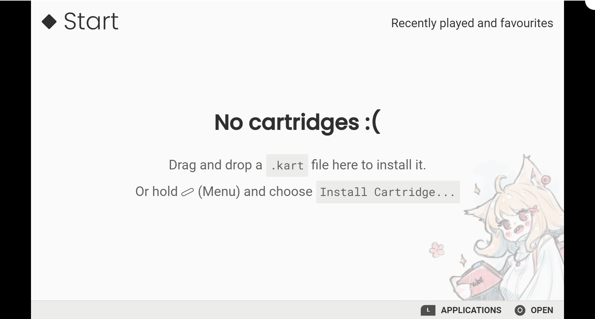

Emulator#
The Kate emulator can transform any relatively modern (later than 2015) device with a modern web browser into a Kate console. In this case, the Kate features are limited by the features present in the device running the emulator.
To run the Kate emulator, the device must still provide the same Computing Power and the same Graphical Power as the Kate physical hardware.
That is, the recommended configuration is:
CPU: 1.8GHz (quad-core);
RAM: 2 GB;
Storage: 64 GB;
Display: 800x480 or higher;
GPU: support for OpenGL ES 3.1;
Some simpler/smaller games may run in less powerful hardware as well.
Case modes#
The emulator supports different case modes, both for aesthetic purposes
and for device input purposes. You can change which case mode your
emulator uses by holding down (Menu button), then selecting
Settings -> User Interface and picking from one of the three
available modes.
{kind=link}
Handheld Mode#

This is the default case mode for the Kate emulator. It includes virtual buttons on the sides and on the top, which can be pressed on a touch-capable device. This way you can use Kate even when no physical gamepad or keyboard is available.
In handheld mode the screen resolution is locked to 800x480. The recommended host device’s resolution must be at least 1310x570 pixels to be able to house the whole emulator UI comfortably. In devices with a smaller screen resolution, the emulator will scale down the UI, which might result in blurry text and images.
TV Mode#

The TV case mode is optimised for devices that have a fairly big screen resolution (e.g.: 1600x900 pixels) but also have some sort of physical input device connected, such as a keyboard or a gamepad.
In TV mode you can choose between 800x480 and 1200x720 as the emulator screen resolution. Your device’s screen resolution will need to be at least 60 pixels larger than that horizontally and vertically in order to fit the emulator UI comfortably.
Fullscreen Mode#
In fullscreen mode the screen takes the whole space available for the emulator. Kate also overlays its security indicators on top of it: a contiguous line of 3 pixels at the very top of the screen is used to display the trust mode and the resource indicators. This means that, on smaller resolutions, the game screen might be slightly covered, but there is no way to disable this overlay, as it’s a security mechanism.
The fullscreen mode otherwise has the same resolution as the TV mode: 800x480 and 1200x720 pixels.
Note
When running Kate’s native mode distribution it’s not possible to
switch between fullscreen and TV/handheld modes from Kate’s settings.
Instead, if you want to run Kate in fullscreen mode, you’ll need to
launch the emulator with the fullscreen flag: --fullscreen.
Input#
Kate supports several different input methods. Games are encouraged to provide alternative inputs, so even if your device doesn’t support all of the input methods, the game is still playable.
Pointer input#
Kate supports pointer inputs (mouse, trackpad, stylus, touch, etc). If your device has any pointer input device connected, you’ll be able to control games that offer pointer input options.
Kate buttons#
Kate has 8 digital input buttons and 2 analog ones which are used to control most games. In the emulator you can:
- Use the virtual buttons
In hand-held mode, if you have a device with a touch screen, like a smartphone or tablet, you can touch the virtual buttons to control Kate. You’ll need to select hand-held mode from
Settings -> User Interface.- Use your keyboard
You can configure the how the keyboard keys map to Kate buttons from
Settings -> Controllers & Sensors -> Control Kate with a keyboard. The default is arrow keys for the (D-Pad);XandZfor and
and  ;
; AandSfor and
and  ;
; Left Controlfor (Capture button), and
(Capture button), and Left Shiftfor (Menu button).- Use a standard gamepad
You can configure how the gamepad maps to Kate buttons from
Settings -> Controllers & Sensors -> Control Kate with a standard gamepad. By default, the gamepad’s buttons are mapped to the Kate buttons at a similar position, with the left joystick doubling as a D-Pad.
{kind=link}